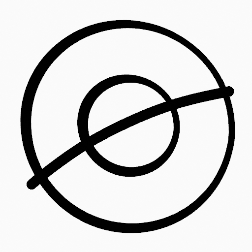
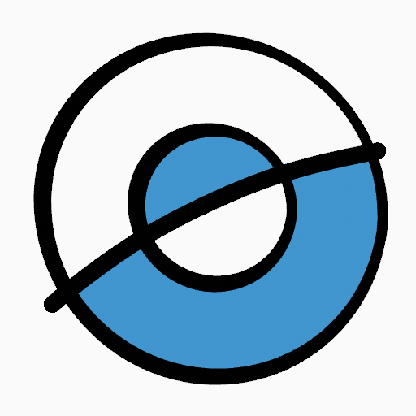
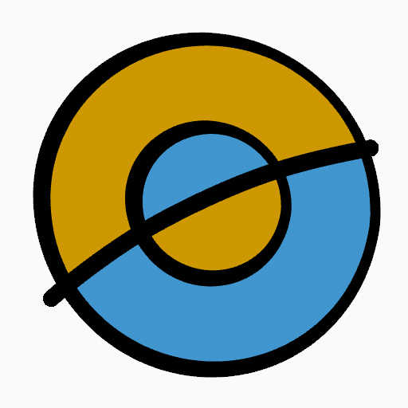
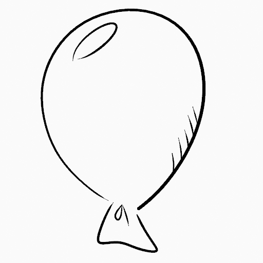
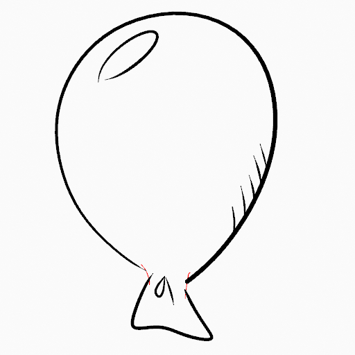
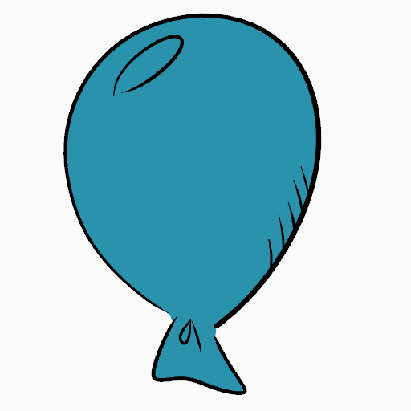
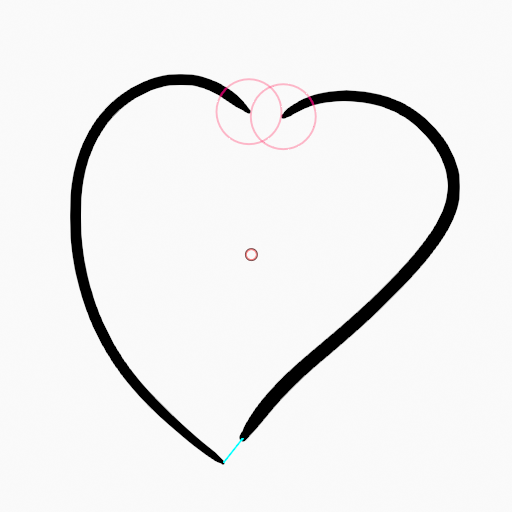
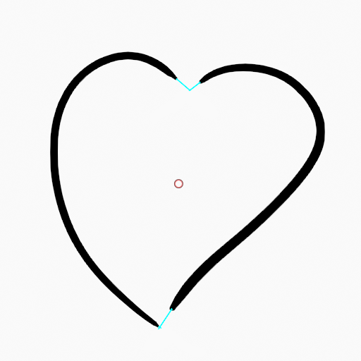

Fill Tool¶
Tham khảo
- Mode:
Draw Mode
- Tool:
Công cụ Fill tạo các nét Grease Pencil được tô đầy bằng cách dò tìm các vùng kín được tạo bởi các nét vẽ hiện có.
Tùy vào Fill Solver được chọn, ranh giới có thể được tính từ hình học nét vẽ hoặc từ biểu diễn dựa trên pixel, cho phép fill hoạt động với cả tranh nét sạch sẽ lẫn các bản vẽ phức tạp hơn.
Công cụ Fill dùng bất kỳ brush draw mode Fill nào của Grease Pencil. Kích hoạt một brush từ asset shelf hoặc bộ chọn brush cũng đồng thời kích hoạt công cụ này cho tiện.
Tool Settings¶
Brush Asset¶
Bộ chọn asset có thể được dùng để mở trình duyệt asset dạng pop-up nhằm chọn brush asset đang hoạt động cho công cụ.
Xem Asset Operators để biết thêm thông tin.
Brush Settings¶
Bạn cũng có thể cấu hình các cài đặt chính của brush hiển thị trong Tool Settings cho tiện.
- Hướng Ctrl
Xác định phía nào của ranh giới được dò tìm sẽ được tô.
- Normal:
Tô vùng kín bên dưới con trỏ.
- Inverted:
Tô vùng bên ngoài ranh giới được dò tìm. Điều này hữu ích để tô nền xung quanh một bản vẽ.
- Size Delaunay
Khoảng cách tối đa được dùng để tìm vùng kín quanh con trỏ.
- Precision Pixel
Điều khiển độ chính xác của việc dò ranh giới dựa trên pixel.
Giá trị cao hơn cho fill chính xác hơn với cái giá là thời gian tính toán tăng.
- Dilate/Contract Pixel
Mở rộng hoặc thu nhỏ vùng fill được dò tìm so với các nét ranh giới.
- Thickness Pixel
Độ dày của các nét ranh giới được dùng bởi fill solver Pixel.
Advanced¶
- Fill Solver
Phương pháp được dùng để dò tìm vùng fill.
- Delaunay:
Dùng trực tiếp hình học nét vẽ để tính các vùng kín. Tạo ra các fill chính xác, không phụ thuộc vào độ phân giải của viewport.
- Pixel:
Rasterize các nét vẽ và thực hiện flood fill. Hữu ích cho phác thảo hoặc các bản vẽ mà ranh giới hình học kém tin cậy.
- Size Unit Delaunay
Điều khiển cách đo Size của brush.
- View:
Đo Size của brush theo không gian màn hình.
- Scene:
Đo Size của brush theo đơn vị của scene.
Kích thước brush giữ nguyên không phụ thuộc vào mức zoom của viewport. Hệ đơn vị được cấu hình trong Scene Units.
- Boundary
Xác định những nét vẽ nào được tính đến khi dò ranh giới fill.
- All:
Dùng cả nét vẽ và nét hướng dẫn fill.
- Strokes:
Chỉ dùng nét vẽ.
- Edit Lines:
Chỉ dùng nét hướng dẫn fill.
- / Show Lines
Hiển thị các đường phụ trợ được dùng để tính ranh giới fill.
- Layers
Xác định Layers nào đóng góp vào ranh giới fill.
- Visible:
Tính ranh giới dùng tất cả các layer hiển thị.
- Active:
Tính ranh giới chỉ dùng layer đang hoạt động.
- Layer Above:
Tính ranh giới dùng layer nằm ngay trên layer đang hoạt động.
- Layer Below:
Tính ranh giới dùng layer nằm ngay dưới layer đang hoạt động.
- All Above:
Tính ranh giới dùng tất cả các layer phía trên layer đang hoạt động.
- All Below:
Tính ranh giới dùng tất cả các layer phía dưới layer đang hoạt động.
- Simplify Pixel
Giảm độ phức tạp của ranh giới được dò tìm trước khi tô.
Giá trị cao hơn cải thiện hiệu năng nhưng có thể làm giảm độ chính xác của vùng được tô.
- Ignore Transparent
Bỏ qua các nét vẽ mà độ mờ của material dưới ngưỡng quy định khi tính ranh giới fill.
Thanh trượt điều khiển ngưỡng độ mờ dùng để coi một material là trong suốt.
- Limit to Viewport Pixel
Chỉ tô các vùng hiển thị trong viewport.
- Auto-Remove Fill Guides
Tự động xóa các nét hướng dẫn fill được tạo thủ công sau khi tạo fill.
Gap Closure¶
Gap Closure tạo các đường hỗ trợ tạm thời để tự động đóng các khe hở nhỏ giữa các nét vẽ, cho phép tô các vùng hở.
- Internal Gaps
Dừng đường hỗ trợ tại các khe hở bên trong.
- Detection Factor
Điều khiển độ nhạy của việc dò khe hở.
Giá trị cao hơn dò được nhiều khe hở hơn, điều này có thể làm vùng fill nhỏ hơn.
- Size Pixel
Khoảng cách tối đa được dùng bởi phương pháp đóng khe được chọn khi tạo đường hỗ trợ tạm thời.
- Mode S Pixel
Phương pháp được dùng để tạo đường hỗ trợ tạm thời.
- Radius:
Nối các điểm cuối hở của nét vẽ gần nhau nằm trong bán kính quy định.
- Extend:
Kéo dài các đầu nét hở cho đến khi chúng cắt một nét khác hoặc đạt khoảng cách quy định.
- Visual Aids Pixel
Hiển thị các đường hỗ trợ tạm thời được dùng để đóng khe.
- Strokes Collision D Pixel
Dừng kéo dài đường hỗ trợ khi chúng cắt một nét vẽ hiện có.
Cách dùng¶
Chọn Brush và Material¶
Trong Tool Settings, chọn brush, material và kiểu màu để dùng với công cụ. Công cụ Fill dùng các kiểu Fill Brush. Xem Brush Settings để biết thêm thông tin.
Tô các Vùng¶
Nhấp LMB vào một vùng kín của nét vẽ. Công cụ sẽ tự động tính ranh giới và tạo một nét kín mới được tô bằng material đã chọn.
 Bản vẽ gốc.¶ |
 Dùng công cụ fill để phủ material lên các vùng kín.¶ |
 Bản vẽ đã tô hoàn tất.¶ |


Fill Guides¶
Nếu có một khe hở lớn trong vùng bạn muốn tô, bạn có thể thêm fill guide thủ công — các đường phụ trợ tạm thời dùng để đóng các hình hở. Để tạo nét fill guide, dùng Alt-LMB và vẽ một đường để đóng vùng mong muốn.
 Bản vẽ gốc.¶ |
 Thêm fill guide để đóng các vùng hở (các đường màu đỏ).¶ |
 Dùng công cụ Fill để phủ material lên vùng kín mới.¶ |


Khi bạn hài lòng với kết quả fill, bạn có thể xóa fill guide bằng công cụ Clean Up trong Grease Pencil Menu ở Edit Mode.
Đóng Khe Tự động¶
Một cách tự động hơn để đóng các khe hở trong vùng bạn muốn tô là dùng các đường hỗ trợ tạm thời. Có hai phương thức: "Radius" hoặc "Extend"
Radius dùng các đường phụ trợ tạm thời được tính từ bán kính của các điểm hở lân cận để đóng các hình hở. Đặt kích thước lớn hơn 0 để điều khiển kích thước vòng tròn trên các điểm hở (vòng tròn sẽ biến mất khi đường đóng được khe hở). Nhấp vào vùng bạn muốn tô và thay đổi chiều dài các nét bằng PageUp PageDown hoặc Wheel. Khi bạn đã hài lòng với chiều dài và chắc chắn các nét tạm thời cắt nhau, nhấp lần nữa để tô vùng.
Bản vẽ gốc.¶ |
 Dùng chế độ Radius để đóng các vùng hở (vòng tròn màu đỏ và các đường màu xanh lơ).¶ |
Dùng công cụ Fill để phủ material lên vùng kín mới.¶ |


Extend dùng các đường phụ trợ tạm thời kéo dài phần cuối của các nét thực để đóng các hình hở. Đặt kích thước lớn hơn 0 để dùng các đường kéo dài, nhấp vào vùng bạn muốn tô và thay đổi chiều dài các nét bằng PageUp/PageDown, Wheel hoặc nút MMB của bút. Khi bạn đã hài lòng với chiều dài và chắc chắn các nét tạm thời cắt nhau, nhấp lần nữa để tô vùng.
Bản vẽ gốc.¶ |
 Dùng chế độ Extend để đóng các vùng hở (các đường màu xanh lơ).¶ |
Dùng công cụ Fill để phủ material lên vùng kín mới.¶ |